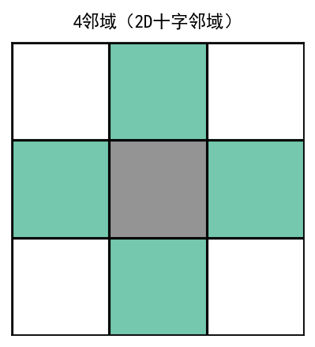
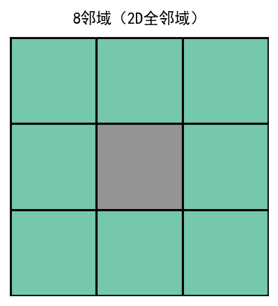
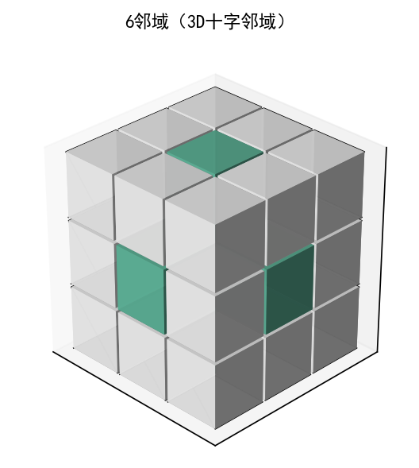
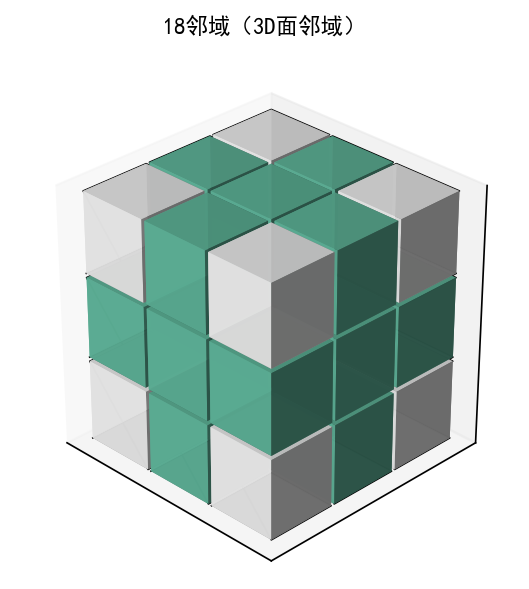
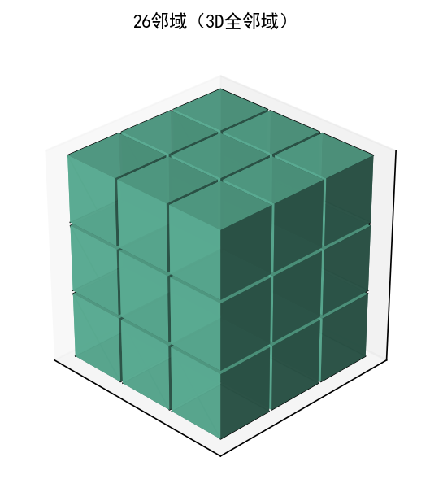

查找二值图像中的连通分量并对其计数
CC = bwconncomp(BW)
CC = bwconncomp(BW, conn)
CC = bwconncomp(BW) 查找二值图像 BW 中的连通分量 CC 并对其计数，CC 输出结构体包含输入图像尺寸，图像中连通分量（如感兴趣区域 (ROI)）的总数，以及分配给每个分量的像素索引。bwconncomp 对二维图像使用默认 8 连通。
CC = bwconncomp(BW, conn) 为连通分量指定期望的 conn 连通。
二值图像，指定为任意维度的数值或逻辑数组。
数据类型： single | double | int8 | int16 | int32 | int64 | uint8 | uint16 | uint32 | uint64 | logical
conn — 像素连通性
4 | 8 | 6 | 18 | 26
像素连通性，指定为下表中的值之一:
| 值 | 意义 | 图示 | |||
|---|---|---|---|---|---|
| 二维连通 | |||||
| 4 | 如果像素的边缘相互接触，则这些像素具有连通性，如果两个相邻像素都为 on 并在水平或垂直方向上连通，则它们是同一对象的一部分。 |  当前像素以灰色显示。 |
|||
| 8 | 如果像素的边缘或角相互接触，则这些像素具有连通性，如果两个相邻像素都为 on 并在水平、垂直或对角线方向上连通，则它们是同一对象的一部分。 |  当前像素以灰色显示。 |
|||
| 三维连通 | |||||
| 6 | 如果像素的面接触，则这些像素具有连通性。如果两个相邻像素都为 on 并以如下方式连通，则它们是同一目标的一部分： 在所列方向之一上连通：内、外、左、右、上、下 |
 当前像素是立方体的中心。 |
|||
| 18 | 如果像素的面或边缘接触，则这些像素具有连通性。如果两个相邻像素都为 on 并以如下方式连通，则它们是同一目标的一部分： 在所列方向之一上连通：内、外、左、右、上、下 在两个方向的组合上连通，如右下或内上 |
 当前像素是立方体的中心。 |
|||
| 26 | 如果像素的面、边缘或角接触，则这些像素具有连通性。如果两个相邻像素都为 on 并以如下方式连通，则它们是同一目标的一部分： 在所列方向之一上连通：内、外、左、右、上、下 在两个方向的组合上连通，如右下或内上 在三个方向的组合上连通，如内右上或内左下 |
 当前像素是立方体的中心。 |
|||
数据类型： double | logical
连通分量，以具有四个字段的结构体形式返回：
| 字段 | 描述 |
|---|---|
| Connectivity | 连通分量（对象）的连通性 |
| ImageSize | 二值图像的大小 |
| NumObjects | 二值图像中连通分量（对象）的数量 |
| PixelIdxList | 1xNumObjects 的单元数组，其中单元数组中的第 k 个元素是一个向量，包含第 k 个对象中像素的线性索引。 |
在北太天元图像处理工具箱 V1.0 推出